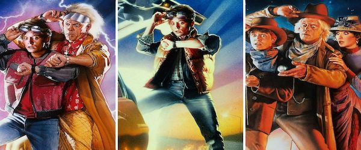

- Fight Club
- The Princess Bride
- The Shawshank Redemption
- The Usual Suspects
- Good Will Hunting
- Quentin Tarantino
- Christopher Nolan
- Back to the Future 
- Star Wars & Marvel
- Kevin Smith - View Askewniverse
- John Hughes

An insomniac office worker and a devil-may-care soap maker form an underground fight club that evolves into much more.
Check out the trailer!While homesick in bed, a young boy's grandfather reads him the story of a farmboy-turned-pirate who encounters numerous obstacles, enemies and allies in his quest to be reunited with his true love.
Check out the trailer!
Two imprisoned men bond over a number of years, finding solace and eventual redemption through acts of common decency.
Check out the trailer!
A sole survivor tells of the twisty events leading up to a horrific gun battle on a boat, which began when five criminals met at a seemingly random police lineup.
Check out the trailer!
Will Hunting, a janitor at M.I.T., has a gift for mathematics, but needs help from a psychologist to find direction in his life.
Check out the trailer!Honorable Mentions
These are movies that I love, but couldn't be narrowed down to a single film to put on my list.

I love every Tarantino film, his characters and dialouge are second to none!

Momento and The Prestige are two of my favorite movies of all time, and Inception and Interstellar will have you rethinking the fabric of reality. A true genius!
Back to the Futre is a nearly perfect film, and the sequels don't disappoint. I mean, what kid didn't want a Hoverboard!?

These movies sum up my childhood, it's like Christmas morning every time they come on screen!

From Clerks, to Mallrats, to Dogma, Kevin Smith writes the most human stories with fantastic dialouge. The pop culture and comic book references don't hurt either.
John Hughes was the voice of the 80's and 90's. Whether you were the brain, the athlete, the basket case, the princess, or the criminal, Hughes made you feel like you could "fit in".
You wouldn't like me when I'm angry...
-Bruce Banner